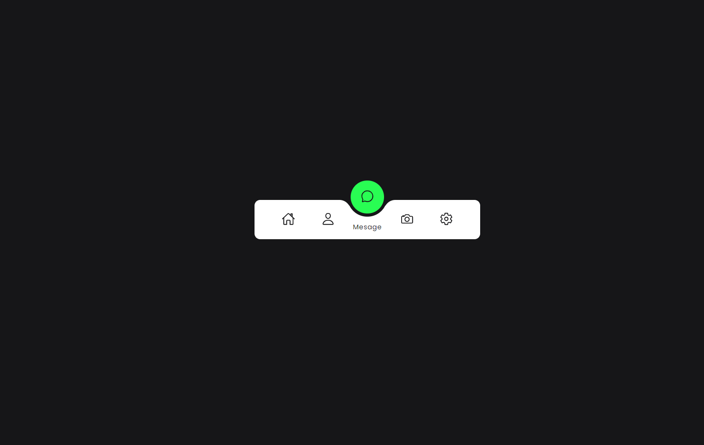
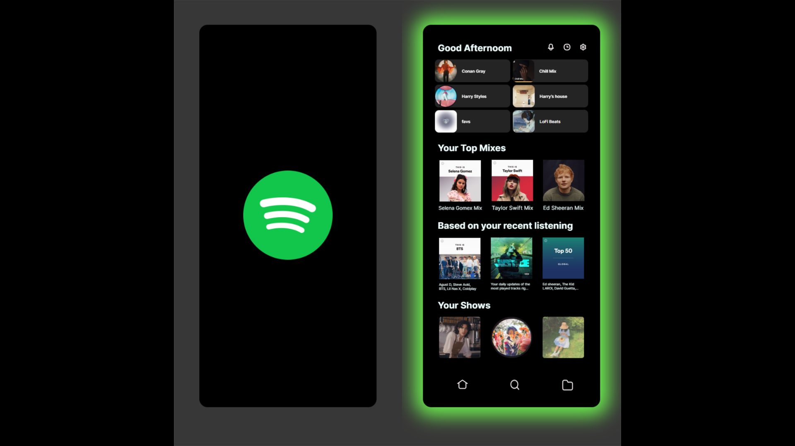
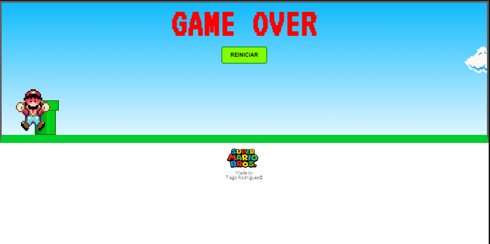
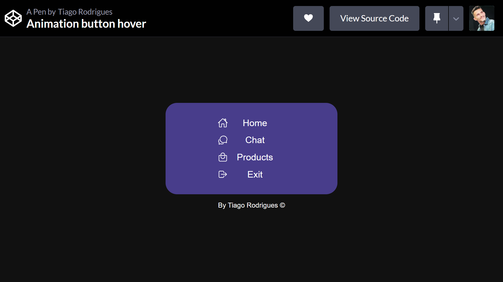
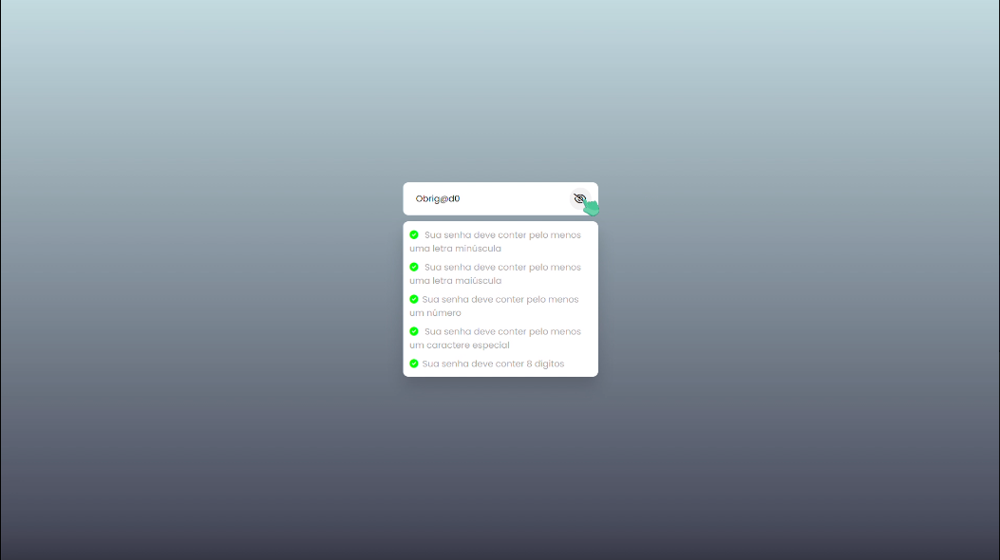
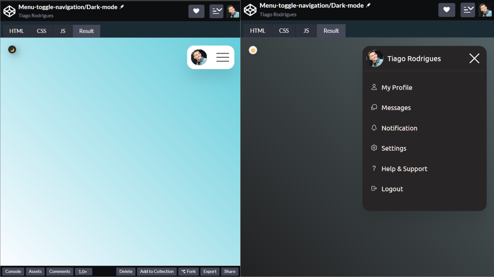

Olá!
Me chamo Tiago,
sou programador
Front end!
Bem vindo ao meu portifólio web
Olá!
Me chamo Tiago,
Bem vindo ao meu portifólio web


Tenho 31 anos, moro em Campo Grande, Rio de Janeiro. Sou estudante
de programação web apaixonado por tecnologia, com foco em HTML, CSS
e JavaScript. Estou constantemente buscando oportunidades para
aprimorar minhas habilidades e expandir meu conhecimento no mercado
de trabalho.
Durante minha jornada acadêmica, tenho me dedicado ao estudo
autodidata dessas linguagens de programação e tenho obtido
resultados significativos na criação de sites e aplicações web
interativas. Sou capaz de transformar designs em código funcional,
garantindo uma experiência de usuário atraente e responsiva.
Minha paixão pela programação web está enraizada na minha
curiosidade em explorar soluções inovadoras para os desafios
tecnológicos do mundo moderno. Estou sempre em busca de novas
tendências, ferramentas e técnicas que possam aprimorar meu trabalho
e agregar valor aos projetos em que estou envolvido.
Menu de Navegação indicado
Desenvolvimento de um menu de navegação com ícone indicativo ao
passar o mouse sobre cada item da lista.
(HTML5 / CSS3/JS)
Clone do Spotify
Clone simplificado dessa aplicação de serviço streaming musical
oficial, feito utilizando CSS GRID + Styled Components + Material
UI.
(HTML5 / CSS3)
Jogo "Mario JUMP"
Projeto de joguinho simples em JavaScript que simula o movimento e
colisão dos personagens no mundo real da Nintendo para a web. Com
animações interativas usando CSS3 e HTML5 Canvas.
(HTML5 /CSS3 /JS)
Menu hover
Menu interativo que se expande em função da posição do mouse no
menu principal. Feito com CSS3 puro.
(HTML5/CSS3)
Validador de Senhas
Desenvolvimento de um validador de senhas simples e eficiente,
utilizando JavaScript apenas.
(HTML5/CSS3/JS)
Menu Toggle/dark mode
Projeto de "Menu toggle",desenvolvido em JavaScript com
funcionalidades extras, como suporte ao modo escuro, usando as
preferências do sistema operacional.
(HTML5/CSS3/JS)
Sinta-se à vontade para entrar em contato comigo